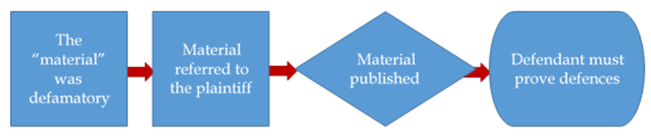

Defamation
Overview
Readings
- Philip H Osborne, The Law of Torts, 6th ed. (Toronto: Irwin Law, 2020), pp 427-452.
- Hill v. Church of Scientology of Toronto, 1995 CanLII 59 (SCC)
- Grant v. Torstar Corp., 2009 SCC 61
- WIC Radio Ltd. v. Simpson, 2008 SCC 40
- Canadian Broadcasting Corp. v. Color your world Corp., 1998 CanLII 1983 (ON CA)
- Hansman v. Neufeld, 2023 SCC 14
Topic 1: General Framework of Defamation Tort
The law of defamation is another strict liability tort: Even if the defendant did not intend to defame the plaintiff, liability may arise. Indeed, you can be liable in defamation to a person you did not know existed. It also differs from most other torts in that it does not involve personal injury or damage to one’s property, but injury to one’s reputation.
Nature of defamation: competing interests at stake
The party making the comments has the right to freely say what that person wants (right to freedom of expression). At the same time, the person about whom the comments are made has the right to be safeguarded against harm from such comments (right to integrity of the person). The law of defamation requires a balancing of these fundamental rights, which are both protected under the Canadian Charter of Rights and Freedoms (one explicitly, in s 2(b); the other implicitly).
This concept was discussed at length in Hill v. Church of Scientology of Toronto, 1995 CanLII 59 (SCC). Hill was the leading SCC case on defamation until a recent set of decisions from 2008 and 2009 and is referenced in our text under Remedies. Grant v. Torstar Corp., 2009 SCC 61 and WIC Radio Ltd. v. Simpson, 2008 SCC 40 are part of our readings for this Module as well.
What you can see in both Hill and Grant is tension between values that the common law has long sought to protect: free expression and reputation. You can also see something that is newer in Canadian law: the effect of the Charter on common law rules.
In Hill, the Supreme Court decided that the existing common law of defamation got the balance right. In Grant, the Court revisited this question, and decided that the balance favoured plaintiffs a bit too much, at least, when it comes to lawsuits against news media (including, potentially, bloggers and Twitter, happy “citizen journalists”). It therefore created a new defence of responsible communication on a matter of public interest.
Libel v Slander
There are two kinds of defamation: libel (written/physical; somehow “permanent”), and slander (spoken: expressed orally; fleeting, impermanent). ... the distinction, with some modifications, is still the law in British Columbia.
At common law, written statements were known as libel, and oral ones as slander. However over time, libel has come to cover essentially anything where there is a permanent record, including print, writings, emails, signs, pictures, films, statues, and television. Slander, on the other hand, are thought of as transitory in nature, and include gestures and unpublished writings of defamatory words later spoken.
The distinction between the two is important, because libel is “actionable per se”, i.e. actionable without proof of special damage, whereas slander requires proof of special damages unless the slander falls into one of the four exceptions (noted at p 436).
If the words were expressed orally, not shown to others in writing, it is slander, even if the speaker had written the words down before speaking. In other words if the words reach the audience orally, it’s slander. That was the take-away rule.
This has been the result of legislative action taken to defining television and radio broadcasts as libel. All provinces in Canada have legislation specifically addressing civil defamation. In British Columbia, the legislation is the Libel and Slander Act, RSBC 1996, c 263. Under s 2,
Defamatory words in a broadcast are deemed to be published and to constitute libel.
which would include words spoken on radio and television.
Defamation and the Internet
Besides traditional forms of defamation, new technologies and the rise of social media create huge opportunities for online defamation. How is material posted on the internet via Twitter, Facebook, YouTube, websites, blogs or chat rooms seen in the law of defamation?
The Supreme Court of Canada addressed this issue in relation to Crookes v. Newton, 2011 SCC 47, referenced in our text (p 450, note 45).
In the contemporary age of the Internet the nature of publication becomes an even more difficult question when a party posts a hyperlink (whether through their own website, social network, blog or the like) that contains defamatory material. Crookes is the most recent case on this topic heard by the Supreme Court. In this case, the defendant Newton had written an article on his website which included hyperlinks to two other websites that were defamatory of Crookes.
The Supreme Court of Canada upheld the lower courts’ decisions that Mr. Newton had not “published” the defamatory material. Abella J, writing for the majority, confirmed that there is no presumption of publication by simply including a hyperlink: there must be something in the “manner in which [the hyperlinker] has referred to content [that in itself] conveys defamatory meaning” (at para 40). It is only when a hyperlinker
presents content from the hyperlinked material in a way that actually repeats the defamatory content, should that content be considered to be ‘published’ by the hyperlinker (at para 42).
The way Abella expressed the test for hyperlink liability seems to make it difficult to sue a hyperlinker for defamation. McLachlin and Fish JJ wrote a concurring decision in which they offered a less strict test:
for them, the reference need not repeat the content; it is enough if it “indicates adoption or endorsement of the content of the hyperlinked text” (at para 48).
Courts are only now beginning to deal with the Internet and defamation and the rules will no doubt shift. Future decisions will reveal how strict a view courts take with websites.
Practice Question
Quiz
- Taking into account the Supreme Court Canada decision in Crookes v Newton, which of the following is the most likely to result in a successful lawsuit for defamation?
- an owner of a blog on Canadian politics includes a link to another site, a self-described government watchdog group, which includes some specific false allegations (bribery, corruption) against the Premier of a Province. The allegations have been proven false in court.
- a white nationalist website includes a link to an article falsely accusing an African-American politician of pedophelia. The politican has never been charged, but the white nationalist website includes some commentary on its own website repeating the allegations and condemning the politician.
- a religious website that opposes abortion includes a link to another article which falsely accuses a medical professional of assault and murder. The medical professional has been threatened several times as a result of the article.
- all of the above
- none of the above
In Crookes, the Supreme Court of Canada indicated that merely including hyperlinks on a website without any additional commentary is akin to footnotes in a book and is not “published” for the purposes of defining defamation. There is no presumption of publication by simply including a hyperlink: there must be something in the “manner in which (the hyperlinker) has referred to content (that in itself) conveys defamatory meaning” (at para 40). It is only when a hyperlinker “presents content from the hyperlinked material in a way that actually repeats the defamatory content, should that content be considered to be ‘published’ by the hyperlinker." In the choices here, only the third option actually includes both a hyperlink AND additional commentary in the form of an article that repeats the defamtory information, thus qualifying it as "published material" for the purposes of determining defamatory content.
Topic 2: Cause of Action Elements
In defamation actions, the plaintiff has the burden of proving the following three elements:

If the plaintiff proves all three of these elements, and the defendant fails to convince the court that any one of the elements is not proved, the plaintiff wins. Unless, that is, the defendant can prove one of the defences to defamation.
- “Material” is a clumsy word, but is often used by courts and is probably the most precise, since it indicates that defamation encompasses a range of forms of expression, not just words. The text uses the word “statement” as well, but in doing so I do not mean to limit the “material” to words, whether spoken or written: a sculpture, a cartoon, a gesture, a piece of performance art: all count.
- You will note that the plaintiff does not need to prove that the defendant has made an untrue statement. Defamation is not merely objectively untrue statements: it includes subjective comments, even comments about a person’s physical appearance. Truth is, however, a defence to defamation claims that are based on assertions of fact that are untrue.
Defamatory material
There is no single, universally adopted definition of what amounts to defamatory material.
The text refers to Sim v Stretch, [1936] 2 All E.R. 1237 for a classic definition of a statement designed to lower esteem or respect for a person in the minds of “right-thinking members of society” (p 430, note 8).
The notion of right-thinking members of society was reworded somewhat by the Ontario Court of Appeal in Canadian Broadcasting Corp. v. Color your world Corp., 1998 CanLII 1983 (ON CA) to include “reasonable or ordinary members of the public.” (p 430, note 9).
The defamatory statement must actually affect a person or company’s reputation, not just relate to hurt pride or feelings. This generally includes descriptions that the plaintiff has committed a wrongdoing (e.g., criminal, tortious or other wrongful conduct) or is of bad character (e.g., fraud, cheating, dishonest).
As mentioned, defamation is a strict liability tort, so the intention or carelessness of the defendant in harming the plaintiff’s reputation is irrelevant. If material defames another, even indirectly, this first element is established. The defendant cannot successfully claim that they were unaware of defamatory nature of the statement nor can they use the defense of repeating another source’s supposedly reliable information. The broad scope of defamatory statements is pretty much summed up by the text’s quoting Lewis Klar: “Almost all uncomplimentary comment is defamatory” (p 431, note 11).
However, a defamation action can’t be brought against a deceased individual’s reputation.
Most courts however take a practical view and interpret statements in their actual effect, in fact, rather than whether they ought to objectively lower a person’s reputation (i.e. text uses the examples of alleging that a person has cancer, or that a person is a homosexual, as examples of potentially defamatory statements, even though “right-thinking” persons ought not to view that person’s character in a more normal light.)
Reference to plaintiff
The words must be aimed at the plaintiff. General comments about the public at large or groups of people will not suffice. However, if the comment is made to a specific group and the plaintiff can be identified as being from that group, even if the plaintiff is not directly mentioned, then this element may be satisfied. The question is: whether a reasonable person would be lead to the conclusion that the defamatory material refers to the plaintiff.
Generally, the smaller the group combined with a specific statement with no qualifying words increase the chances that such a conclusion is established. However, as the text notes the rules relating to group defamation make it virtually impossible for it to be used as a remedy in cases of hate propaganda directed against minority groups (see p 433, and specifically note 15).
The reference to the plaintiff element can be established even if the defendant was not aware of the plaintiff’s existence. What matters is whether some who hear or see the defamatory material will think that it refers to the plaintiff in question, not what the defendant intended.
Published
For defamation to be established, the derogatory remarks must be communicated, a.k.a., published, to third parties. Remarks that are just passed privately by the defendant to the plaintiff do not give rise to the tort. A third party must actually receive the comments, whether they were published negligently or intentionally.
For example, a defendant has published defamatory material if the defendant carelessly lets others hear or read the material. Such was the finding in McNichol v. Grandy, 1931 CanLII 99 (SCC) which is referenced in our text under publication (p 435, note 18). Two comments on this case:
- First, if only the plaintiff hears the defamatory words, there is no defamation; there must be others who hear them.
- Second, if the words are spoken in a language that the third-party audience does not understand, there is no publication.
However, no publication of the material is made if the third party receives the communication through that person’s own wrongful act (i.e. reading a private letter containing defamatory statements that is not addressed to that person).
A somewhat distinct issue arises when the material is communicated to third parties by a party other than the person who made the defamatory remarks. For example, should libraries, radio stations, carriers, bookstores or newsstands be liable if material they are distributing or selling is defamatory? What if those parties distributing the material are unaware that the material is defamatory? The case of Vizetelly v Mudie’s Select Library Ltd [1900] 2 Q.B. 170 (C.A.) considered this issue (p 434, note 17). It held that parties that only played a subordinate role in disseminating the material would not be liable as long as:
- They had no knowledge that the work contained libel;
- There were no extraneous facts that would have put them on guard that the work contained libel; and
- When they disseminated the work, it was not due to their negligence that they were unaware of the libel (as would be the case if, e.g., a reasonable person would have identified the potentially libellous material and made inquiries).
This is sometimes referred to as innocent dissemination and not considered “publication” at all.
The B.C. Libel and Slander Act codifies this rule as it applies to public and educational libraries: they need not prove that they fit into the three part test.
The text discusses innocent dissemination in the context of “Cyber-defamation” and defendants arguing that they are mere conduits for the defamatory communications (p 448). Innocent dissemination is a possible defense in those scenarios. However, the defense becomes less plausible if a defendant plays a more active role beyond a detached conduit, such as moderating a website discussion or refusing to remove defamatory material after notice is given.
Topic 3: Defamation Defences
Many of defences are now incorporated into or modified by the Libel and Slander Act. Similar defences are also set out in the Criminal Code for the crime of defamatory libel.
Justification (e.g. truth)
This is the simplest of the defences. If the material is true and accurate, even though it is harmful to the plaintiff’s reputation, the publication is justified. Truth is a full defence. If a statement it true, the defendant’s motive is irrelevant: It doesn’t matter whether the defendant spoke or wrote (or sculpted, etc.) maliciously. Truth may not always “set you free,” but it absolves defendants of liability.
If the defamation is a straightforward factual statement, e.g., “John was convicted of dope dealing,” and that is true, then truth is indeed a simple and complete defence. But if the statement is more a matter of opinion truth isn’t going to work as a defence. For more subjective comments, defences such as qualified privilege or fair comment are more likely to be relevant.
You only need to prove the claim on the balance of probabilities, not at the standard of beyond a reasonable doubt.
The other nuance with truth is that the defendant must not only prove the literal truth of a statement, but any innuendo ("i-near-wen-do") meanings, too. However, you don’t need to prove the truth of every single factual element in the defamatory statements, just the most significant, material facts.
Before we move on, an onus reminder: the plaintiff does not need to prove that a defamatory statement is untrue. If a statement is defamatory, the law presumes it is false. That is why “truth” is a defence, and why the onus is on the defendant to prove truth. And the onus is on the defendant, not some third party: If you repeat a rumour and the person defamed by the rumour sues you, it is up to you to prove the truth of the rumour, not the person who started it.
Absolute Privilege
Absolute privilege is a defence that attaches to certain statements that are made. Courts (and textbooks) always emphasize that it is “the statements themselves” that are privileged. Even if the statements are defamatory, the maker of the statement cannot be held liable. Again, malice on the part of the maker will not defeat the defence.
This defence applies to the following types of statements:
- statements made in Parliament (or a provincial legislature; but not municipal councils)
- statements that are made in trial or court documents, or at formal public inquiries
- communications within solicitor client privilege (as long as reasonably related to the legal work)
- statements between spouses
- statements made by high government officials (some cases limit this defence to ministers, and to formal communications only)
So, for example, testimony given in open court or a statement made during legislative debate that is defamatory has the protection of this privilege.
Likewise, a pleading such as a Notice of Civil Claim that contains defamatory material also falls under absolute privilege, including the file pathname at the bottom of the document. The drafter of the document would be protected from liability. The same applies to a defamatory statement contained in an unfilled Notice of Motion (recall Hill v Church of Scientology).
What about reciting or reporting on the contents of such documents? Does that fall within absolute privilege? Such reports do not have the protection of absolute privilege, but they may fall under our next defence, qualified privilege (including a legislative extension of qualified privilege in the Libel and Slander Act), or, for news media, within the new defence of responsible communication.
Qualified Privilege
While absolute privilege applies to the actual statements, qualified privilege attaches to the circumstances or occasions in which the statements are made. ... here are some more comments on the difference between “Absolute Privilege” and “Qualified Privilege.”
“Absolute privilege”: is mainly about where the statements are made, and sometimes on the relationship between speaker and hearer (spouses). If they are made in a certain setting (see the list above), someone defamed by them cannot sue. If, by contrast, the same statement is made outside that setting, there is no absolute privilege. The interesting scenarios are ones in which a person says something that does have absolute privilege, and then somehow repeats it outside that setting. In Hill, the court claims were repeated verbatim at a press conference, so the privilege was lost.
The best-established rules for absolute privilege are on parliamentary and judicial proceedings, which are entirely about the “where.” As for the other situations: “ministers of government” is not about the location of the statement; ditto for communication between spouses, and between lawyer and client. So don’t worry about this “communications” vs. “circumstances” distinction. Focus instead on the situations in which absolute privilege applies, and the ones in which qualified applies (which I describe below).
What makes absolute privilege absolute is that it is absolute. If the statement fits the category, it is protected, no matter what. Qualified privilege is, unsurprisingly, qualified: if there is malice, the defence fails, unlike absolute privilege. If the communication reaches too broad an audience it fails. Again, not so with absolute privilege.
“Qualified Privilege”: The privilege arises whenever the publisher of defamatory material (defendant) has an interest or duty to convey the material to a person who has a reciprocal interest or duty to receive it.
Defamation scholars have grouped the various cases in which the defence of Qualified Privilege has applied into categories based on factual similarities. What emerges from the categories, and helps to make the definition above a little more intuitive is that the cases are all about the relationship between the person who utters the defamation (the “publisher”) and the audience who hears it. The defence comes from the mutual duties and interests they have in the defamatory information.
To repeat again, qualified privilege is a “general privilege”, there is in the law no fixed list of instances in which it applies. Ultimately the defence is about the idea of reciprocal rights or duties between the publisher of the defamation and the audience.
There are four categories for which courts have recognized a reciprocal relationship that gives rise to Qualified Privilege. In these categories, there is a legal, economic, moral, or social duty to communicate the information. In declining order of strength (and clarity), they are:
- Protection of one’s own interest
- Common interest or mutual concern
- Moral or legal duty to protect another’s interests
- Public interest
In addition to fitting into these categories, the comments must be made by the defendant in good faith (without malice towards the defendant) and not be an “abuse of privilege,” i.e., exceed what is reasonable in the circumstances.
What does that mean? Even if a defendant can prove that the necessary reciprocal relationship existed, the plaintiff can defeat the defence by proving that the defendant acted with malice or exceeded the limits of the duty.
The plaintiff has the onus to prove malice or abuse. If the plaintiff proves the three elements of defamation then the defendant must prove qualified privilege (or another defence). If the defendant proves qualified privilege then the plaintiff must prove malice or abuse. The onus goes back and forth.
On the difference between malice and abuse or excess of privilege, see Hill v Church of Scientology at paras 145-147, 155-56. The text gives us examples that demonstrate several categories (pp 437-438). Below are some comments on several categories of Qualified Privilege that are gleaned from case law. Some of the cases are not referenced in our text and I’ll point those ones out.
Self-interest
Sun Life Assurance Co. of Canada et al. v. Dalrymple, 1965 CanLII 9 (SCC) illustrates that a defendant has a qualified privilege to utter defamation not only in defence of that individual’s own interests, but in the interests of the individual’s employer.
Four rules can be pulled from this decision, plus a definition.
- Self-interest qualified privilege definition: “Statements ... fairly made by a person in the conduct of [that person’s] affairs in matters where [that person’s] own interest is concerned are prima facie privileged [i.e., protected from a defamation claim, unless the plaintiff proves malice or excess due to irrelevance or excess publication]
- Relevance: “statements irrelevant to protecting the interest will result in loss of privilege”
- Malice (more of a definition than a rule): “does not [only] mean personal spite or ill-will; it may consist of some indirect motive not connected with the privilege.” And defamation, “if utterly beyond and disproportionate to the facts[,] may provide evidence of express malice”, i.e., even if a statement is relevant to the protection of one’s self-interest, if it is excessive in tone, it can amount to malice
- Procedure (law/fact): “Whether the defendant was actuated by malice [i.e., acting out of malice, out of intent to hurt the plaintiff] is, of course, a question of fact for the jury but whether there is any evidence of malice [at all] is ... a question of law for the judge”
- Onus to prove malice against each defendant: “Express malice must be found against each one of the defendants” in cases of multiple defendants. If only one of the three defendants here acted out of malice, the plaintiff’s claim against the other two fails, though not against the one who had malice. The Court also confirms that if any one employee (in this case) acted out of malice, the corporate employer is vicariously liable.
- Regarding abuse, or excess, of privilege: an example that is usually distinct from malice is excessive publication: that is, communicating the defamation to too wide an audience. Over publication could, perhaps, be due to malice in some cases, where there is some evidence that the over publication was an attempt to embarrass the plaintiff in a way that was unnecessary to protect the defendant’s interests. However over publication defeats the defence of qualified privilege, whether or not it was done through malice.
Common interest
The key question for the court is whether most, not all, of the audience that sees the defamation is part of the same community as the defendant, and shares the same concerns with or interest in the subject of the defamation. That community is usually economic, but can be social or cultural. The text references Adam v Ward, [1917] A.C. 309 (H.L.) as an example of this principle (p 437, note 20).
Bereman v Power Publishing Co (1933) 92 A.L.R. 1024 (Colo SC) is an excellent American example (not in our text) of the court’s concern with ensuring that the audience is narrow enough. The key issue in this case was the extent of publication. The defendant published a notice about some some unionized laundry workers who left union shops and went to work for a non-union laundry. The notice called them “spies” who had “sold their manhood” by doing so. The notice appeared in a newsletter of the Colorado State Federation of Labour. Although the newsletter was available to non-union members, its circulation was narrow enough that it did not amount to excessive publication. The communication was kept within the community of concern.
Note the distinction the court makes between “papers devoted to particular organizations” and “newspapers of general circulation”.
Moral or legal duty to protect another's interest
Watt v Longsdon [1930] 1 K.B. 130, a U.K. Court of Appeal case (not in our text) is one that did not fit. The Court refers to a precedent from 1891, which offers this advice: “each judge must decide it as best he can for himself.” Obviously this isn’t a particularly clear statement, but the court does try its best, referring to an 1891 precedent does go on to say that it is an objective test: a moral duty is one “recognized by English people of ordinary intelligence and moral principle.” Again, this illustrates the looseness of the principle. In Watt, the Court decided that communicating gossip does not count as a moral duty.
Public interest
Situations in which courts have found “public interest” qualified privilege include reporting suspected crime to police, reports of judicial proceedings, and reports of public meetings.
An example of overlap of categories: reporting crime to the police. It may strike you as an instance that could fit into the “moral duty” category, especially where the report is made for the protection of the victim of the crime (e.g., someone suspected of being physically abused). However, another way to think of that “moral duty” category, perhaps, is that it is a subset of the “public interest” category, in which the defendant advises the suspected victim of some wrongdoing, not protecting the public interest in general (as in reporting crime to police), but trying to protect that person.
That last pair of reports is codified in the B.C. Libel and Slander Act, ss 3, 4, which provide a privilege defence for newspapers that fairly and accurately report judicial proceedings or public meetings. Remember: this is a qualified privilege, not absolute. In addition to the requirement of fairness and accuracy, the defence will fail if the plaintiff can prove malice.
The news media have often attempted to rely on this defence in reporting matters of public interest (other than the easy cases of reports of judicial proceedings or public meetings). However, the courts have not found that the media have a legal duty to report to the public. This was the result in Globe and Mail Ltd. v. Boland, 1960 CanLII 2 (SCC). The right to publish, which news media have, is not the same as the duty to publish (p 438, note 22).
Although the courts have found that qualified privilege does not apply to media reports on matters of general public interest, courts in England, Australia, and now Canada have adopted a new defence, known here as “responsible communication,” which does protect the media.
Responsible Communication on matters of public interest
Originally from England, where it is known as “responsible journalism,” it allows journalists and other commentators a defence to factual inaccuracies that they report if there is a public interest in the material, and the journalist acted within the standards of responsible journalism. The defence relates to misreporting of facts, not opinions.
The defence arose with the U.K. case of Reynolds v Times Newspapers Ltd [2001] 2 A.C. 127. The House of Lords laid down a set of factors for determining whether the defence of “responsible journalism” had been made out (p 443, note 34). This defence began to appear in Canadian cases in the 2000s, and worked its way up to the Supreme Court of Canada in a pair of companion cases: Grant v. Torstar Corp., 2009 SCC 61 and Quan v. Cusson, 2009 SCC 62. It is in Grant that the Supreme Court of Canada established and defined the new defence, which it renamed to “responsible communication” to reflect the broader application of the defence (see p 441, note 29).
Grant involved a newspaper article about the approval of a golf-course development. When Grant sued, the Toronto Star wanted to argue “responsible journalism.”
In balancing the competing interests of freedom of expression and protection of reputation, the Supreme Court held that the defence should be allowed so as not to chill free speech on matters of public interest. And since much information is now disseminated through blog postings and other online media in addition to traditional newspapers, the court stated that the defence is “available to anyone who publishes material of public interest in any medium” (Grant, para. 96), if the following two elements are shown:
- The publication is on a matter of public interest, and
- The publisher was diligent in trying to verify the allegation, having regard to:
- (a) the seriousness of the allegation;
- (b) the public importance of the matter;
- (c) the urgency of the matter;
- (d) the status and reliability of the source;
- (e) whether the plaintiff's side of the story was sought and accurately reported;
- (f) whether the inclusion of the defamatory statement was justifiable;
- (g) whether the defamatory statement’s public interest lay in the fact that it was made rather than its truth (“reportage”); and
- (h) any other relevant circumstances.
See Grant, para 126 for a summary of the defence. Note in particular the factors the court will consider when determining whether diligence was used by the defendant to verify the comments.
This defence will no doubt be argued more frequently now. However, B.C. courts have applied it somewhat narrowly. Defendants were unsuccessful in proving it in some early cases: e.g., Hansen v. Harder, 2010 BCCA 482. In this case, the defence failed because the defendant had not sought the plaintiff’s side of the story (p 446, note 36).
One last reminder: the defence is available not only to “traditional” news media like newspapers, magazines, radio, and television. The Supreme Court of Canada explicitly applies it to online media, including blogs, as long as these “new disseminators of news” satisfy the factors (Grant, para 96).
Fair comment
For defamatory opinions on matters of public interest, an available defence is that of fair comment. The elements needed to establish the defence are:
- The comment is an honest statement of opinion on a matter of public interest
- The comment is based on fact
- The comment was made without malice
- The comment was fair, in that it is an opinion that a “fair-minded person could possibly have promulgated.”
This defence also extends to fair comment made about works of art, such as literary, theatre, movie or art reviews.
It is important to note that for the fourth element, the person making the opinion need not hold an honest belief in the opinion. All that is required is that objectively, a person could have honestly held that opinion. The text mentions the prior use of a subjective test by the Supreme Court of Canada, leading to the Court’s decision in WIC Radio Ltd. v. Simpson, 2008 SCC 40 to re-examine the issue and adopt an objective test (see pp 442-443, note 28). This is especially relevant for newspapers that publish letters to the editor, where the newspaper does not necessarily share the same opinion as the writer. This protection has also been incorporated into the B.C. Libel and Slander Act in section 6.1. Again, this defence can be defeated if malice on the part of the defendant is shown.
s 6.1 the Libel and Slander Act
Fair comment
6.1(1) If a defendant published alleged defamatory matter that is an opinion expressed by another person, a defence of fair comment must not fail merely because the defendant did not hold the opinion if
- (a) the defendant did not know that the person expressing the opinion did not hold the opinion, and
- (b) a person could honestly hold the opinion.
(2) For the purposes of this section, a defendant referred to in subsection (1) has no duty, before or after publication of an opinion referred to in that subsection, to inquire into whether the person expressing the opinion does or does not hold the opinion.
Anti-Strategic Litigation Against Public Participation ("Anti-SLAPP") Motions
Defamation suits are a way to vindicate an individual’s personal or professional reputation in the face of attack, but can have the undesirable effect of suppressing the open debate that is the cornerstone of a free and democratic society.
Strategic litigation against public participation ("SLAPP") targets one or more individuals or groups that speak out or take a position on an issue of public interest. SLAPPs use the court system to limit the effectiveness of the opposing party’s speech or conduct. SLAPPs can intimidate opponents, deplete their resources, reduce their ability to participate in public affairs, and deter others from participating in discussion on matters of public interest.
A famous example of a case that has been referred to as a SLAPP is the so-called "McLibel" case brought by the global fast food chain McDonald's in the UK, McDonald's Corporation v Steel & Morris [1997] EWHC 366 (QB).
Another example of a SLAPP lawsuit could be Taseko Mines Limited v. Western Canada Wilderness Committee, 2016 BCSC 109.
The ease of filing a statement of claim (and especially of threatening to do so) makes it possible for wealthy parties to use the justice system strategically in order to suppress public interest speech. To help combat this problem, Ontario enacted anti-SLAPP legislation in 2015. British Columbia followed suit in 2019: see, e.g. Protection of Public Participation Act, S.B.C. 2019, c. 3 ("PPPA").
These statutes provide defendants with the ability to bring a pretrial motion to dismiss lawsuits that arise from expression on matters of public interest. Under s. 4 the PPPA, for example, if a defendant can show that the case involves free expression on a matter on a matter of public interest, the burden then shifts to the plaintiff to prove that their claim has merit, that the defendant has no valid defence and that the harm to its reputation outweighs the public interest in the expression. If the plaintiff fails on any point, the case will be dismissed.
A fascinating example of s. 4 of the PPPA in action was the decision of the Supreme Court in Hansman v. Neufeld, 2023 SCC 14. A majority of the Supreme Court held that the action was correctly dismissed by the chambers judge under s. 4. The majority held held that Mr. Hansman had a valid fair comment defence and that the public interest in protecting Hansman's "counter-speech" outweighed the limited harm alleged by Neufeld. Justice Karakatsanis maintained that dismissing the suit was essential to prevent undue restrictions on open debate.
Practice Question
Quiz
- A Minister of Labour makes a statement during Question Period in Parliament accusing a Labour Union leader, without offering any evidence, of taking illegal campaign contributions during a recent union election. She repeats the allegation again in a press conference outside the steps of Parliament Hill. She also has discussions with her husband, a TV reporter, about the allegations. This statement may be:
- Not protected whether inside or outside the House and the Minister may face a lawsuit for defamation unless she publicly apologizes
- Protected in the House by Absolute Privilege but may not be protected outside the House
- Is protected by Qualified Privilege at all times
If the statement was just made in the House the statement may be protected by absolute privilege BUT the MP is taking a risk by repeating the House statements outside of normal parliamentary debate. Although the Minister offered no evidence to support the allegation, she made the initial statement in Parliament. She would be protected as a high-ranking Minister making the statement in relation to her job functions, but the press conference may subject her to an action for defamation. Similarly the statement to her husband is protected as he is a spouse.
Topic 4: Remedies plus Negligence
For libel, damages are presumed because the defamatory words are printed and disseminated. In other words, libel actions are actionable per se and no actual damage need be proved. Damages are general damages for harmed reputation, and the extent of damages would depend on the plaintiff’s standing in the community. Sometimes damages can be minimal, and in general do not exceed $100,000.
For slander actions, it must be shown that the words were verbalized and repeated to other persons. Unlike libel cases, for slander actions, special damages must be proven. (e.g., the plaintiff lost a lucrative business contract due to the slanderous words). Mere ridicule or other forms of non-quantifiable damage to reputation are not enough. The reason for the difference is that the damage from defamatory words spoken in passing are not thought of as long lasting as those in printed material.
As mentioned previously in this Module, there are four exceptions to this rule. Slander is actionable without proof of loss (i.e., actionable per se) where the defamatory remark relates to:
- The commission of a serious crime (i.e., a suggestion that the plaintiff has done so),
- A contagious disease,
- Unfitness to practice one’s trade or profession, or
- Adultery (only in some situations, i.e. historically if plaintiff is a woman)
Finally, note that under the Libel and Slander Act, s 10, an apology given by the defendant may be considered in mitigating the amount of damages awarded.
A note on overlap with other areas of law
The text mentions defamation and negligence as not necessarily mutually exclusive, referencing the Supreme Court of Canada’s decision in Young v. Bella, 2006 SCC 3 which held that where there was a pre-existing duty of care, and harms that were not exclusively tied to reputation, an action in negligence may lie (particularly where the appropriate standard of care has not been held to). The Court tied in concerns over freedom of expression and qualified privilege to a determination of the appropriate standard of care (p 449, note 47).
In Canada, there are also several statutes that mention defamation to some degree. As previously mentioned, British Columbia’s Libel and Slander Act tweaks some of the common law rules.
Words that are defamatory about one’s personal life can also be an invasion of one’s privacy, and actionable under the Privacy Act (we look at this in Week 11). In addition, defamatory remarks may also be discriminatory (e.g., race, religion, gender, etc.) and dealt with under human rights legislation and under employment law.
In addition to civil action, libel can also be a crime under the Criminal Code of Canada. Under s 298 of the Code, it is an indictable offence (with up to 2 years of jail time: s 301) to publish a defamatory libel, which is something that injures the reputation of another by exposing the person to hatred, contempt or ridicule, or that is designed to insult that person. Subsection (2) states that the defamatory libel may be expressed both directly and indirectly (“by insinuation or irony”), and can take the form of words or objects.
Discussion: Module 9: Topic 4
Please consider the following questions:
In Hansman v. Neufeld, the majority found that the public interest factor under s. 4 of the PPPA weighed heavily in favour of the Defendant, Mr. Hansman. In so concluding, Justice Karakatsanis wrote (at para. 91) that the Defendant "sought to counter expression that he and others perceived to undermine the equal worth and dignity of marginalized groups." By contrast, in dissent, Justice Côté wrote (at para. 124) that "[s]ilencing contrary and unpopular views seems antithetical to our liberal, pluralistic and democratic society, which is committed to the free exchange of ideas in the pursuit of truth." After the Court released its decision, the lawyer for Mr. Neufeld told CBC that "[t]his judgment sends a very troubling message that access to the courts will be decided on the basis of what your views may be rather than the merits of a claim."
Do you think that either Justice Côté or Mr. Neufeld's lawyer's critiques of the majority judgment in Hansman have any merit?
Answer
As I understand it, s. 4 of the Protection of Public Participation Act, S.B.C. 2019, c. 3 (“PPPA”), creates a pre-trial motion mechanism. Under this mechanism, a defendant in a defamation action may bring an application to dismiss the claim if they can show that the proceeding arises from an expression relating to a matter of public interest (s. 4(1)). In such a motion, the defendant is the applicant and the plaintiff is the respondent.
The onus then shifts to the plaintiff/respondent to satisfy the court, under s. 4(2), that:
- the claim has substantial merit;
- the defendant/applicant has no valid defence; and
- the harm likely to have been or to be suffered by the plaintiff as a result of the expression is sufficiently serious that the public interest in continuing the proceeding outweighs the public interest in protecting that expression.
This framework contrasts sharply with the common law elements of defamation, namely, defamatory meaning, reference to the plaintiff, and publication. It raises the bar for plaintiffs by imposing an additional evidentiary burden at an early stage where the expression involves matters of public interest. A court must dismiss the proceeding if the plaintiff fails to meet this burden.
In Hansman, the majority first considered the public interest weighing exercise, emphasizing that the harm to the plaintiff must be sufficiently serious to outweigh the public interest in protecting freedom of expression.
The Court also held that the legislation requires some evidence from which the judge can infer a causal link between the defendant’s expression and the alleged harm. Where multiple parties have criticized the plaintiff, the harm cannot be fully attributed to a single defendant. In such cases, establishing a strong causal connection becomes both more important and more difficult.
Further, the Court clarified that “harm” refers to the damage caused by the defendant’s expression itself, not the plaintiff’s inability to pursue a claim. In other words, the loss of the right to sue is a potential outcome of the balancing exercise, not a factor to be weighed. There is no “chilling effect” in preventing plaintiffs from using defamation actions to silence critics and obtain damages.
On the issue of valid defences, the Court noted that the defence of fair comment is grounded in the principle that individuals must be free to express their genuine opinions on matters of public interest without fear of defamation liability. The defence requires that: the comment be on a matter of public interest; be based on fact; be recognizable as comment; satisfy an objective test (i.e., whether any person could honestly express that opinion on the proven facts); and not be motivated by express malice.
In my view, neither Justice Côté’s dissent nor counsel for Mr. Neufeld raises persuasive arguments. Mr. Hansman had a valid defence of fair comment, and the public interest in protecting counter-speech outweighs any harm suffered by Mr. Neufeld.
More broadly, s. 4 of the PPPA provides an effective mechanism for balancing the protection of reputation with the public interest in free expression by shifting the burden of proof at an early stage. It does not create a chilling effect. To the contrary, if the roles were reversed: if Mr. Hansman or a sexually marginalized group sued Mr. Neufeld for defamation, they would likely face the same hurdle at the pre-trial stage. Section 4 serves as a safeguard for free expression, not as a tool to suppress unpopular or dissenting views, contrary to Justice Côté’s concerns.
Textbook Summary: pp 427-452
Chapter 7: Defamation
The law of defamation has traditionally favoured the protection of reputation over free speech interests and, to a significant degree, modern Canadian defamation law continues to reflect this bias.
Recently, however, the Supreme Court has begun a gradual recalibration of defamation law in favour of free speech. It has been influenced by reform in other common law jurisdictions and by the failure of traditional doctrine to reflect sufficiently the constitutional recognition of freedom of expression and freedom of the press in the Charter.
B. THE GENERAL FRAMEWORK OF THE TORT OF DEFAMATION
The courts have chosen a low threshold for the establishment by the plaintiff of a prima facie cause of action in defamation. The balance in favour of free speech is restored by a number of defences. These defences are designed to permit the vigorous exchange of information, ideas, criticism, and views that are essential in a modern democracy.
C. THE ELEMENTS OF THE CAUSE OF ACTION
(1) A Defamatory Statement
The test for defamation is an objective one. It is sufficient to prove that the statement would have the effect of lowering esteem or respect for the person in the minds of persons variously described as “right-thinking members of society” or “reasonable or ordinary members of the public.”
There is no need to prove that the statement was false or that there was any actual loss of esteem by another individual.
It is no defence that those who heard the defamatory statement did not, in fact, think less of the plaintiff or that they knew the statement to be untrue or did not believe it.These questions may be relevant in the assessment of damages but not in the determination of liability.
Liability in defamation is strict. The plaintiff is not required to prove that the defendant intended to defame the plaintiff or that the defendant failed to take reasonable care in ascertaining the truth of the statement. It is also no defence that the defendant was unaware of the defamatory meaning of the words he used or that the defendant did not intend the words to refer to the plaintiff. Nor is it a defence that the defendant merely repeated what he had been told by a reliable and authoritative source.
Defamatory statements must, however, be distinguished from statements of abuse and blasphemous statements made in anger.
Defamation law deals with statements that do, in fact, tend to lower the reputation of people in the estimation of ordinary people, not with how people ought to react or with the idealized norms of political and social correctness.
No action for defamation is available to protect anti-social or criminal repute.
There are situations where apparently innocent words can, by the introduction of evidence of extrinsic facts, be shown to have a defamatory meaning. This is known as a true innuendo.
A corporation may bring an action in defamation. It does not have a reputation in the personal sense but it has a business reputation which may be defended from attacks that it is corrupt, that it is a vehicle for fraud, or that it ignores pollution controls. Federal, provincial, and local governments may not, however, bring an action in defamation against their critics. Democratic values including free speech require the widest freedom to comment on governments. One may attack a democratically elected government as corrupt, incompetent, or a failure without fear of civil action. This immunity does not, however, apply to attacks on individual public officials or those elected to public office who may seek vindication in an action for damages.
(2) Reference to the Plaintiff
Evidence of surrounding circumstances and extrinsic facts may be adduced to show the connection. The test is whether a reasonable person acquainted with the plaintiff would believe that the words referred to him. There is no need to prove that any person did, in fact, understand the statement as referring to the plaintiff. There is also no need to prove any intent or negligence in making reference to the plaintiff or to prove that the defendant knew or ought to have known of the plaintiff.
It is not, however, easy to determine when defamatory words said of a group impair the reputation of individual members of the group.
(3) Publication
Defamation protects reputation. It is, therefore, essential that the defamatory statement be published to a third person who heard it or read it and understood it. Publication of the statement is the actionable wrong. Consequently, to call another a liar and a crook to their face, beyond the hearing of any third person, is not actionable in defamation.
Publication does not entail any formal disclosure to large numbers of persons. Publication to a single person is sufficient. Indeed, each time a defamatory statement is communicated or repeated, a new cause of action arises.
A distinction is drawn between the producers and the innocent disseminators of widely distributed print or visual defamatory material. News vendors, book distributors and retailers, libraries, and, in some circumstances, printers are not liable if they have no knowledge of any defamatory content in the material and no reason to be suspicious that the material contained defamatory material and if they have exercised reasonable and practical steps to vet the material. The liability of innocent disseminators, therefore, depends upon proof of fault.
A defendant is not normally responsible for the republication of a defamatory statement by another person. There are, however, exceptional circumstances, including those where the republication was authorized or intended by the defendant or where the republication of the statement was likely to occur. In those circumstances it is reasonable that the original publisher continues to bear some continuing responsibility.
D. LIBEL AND SLANDER
At common law, defamatory statements are categorized as either libel or slander. Originally, the distinction turned on whether the communication was written (libel) or verbal (slander). Happily, many provinces, including Alberta, Manitoba, New Brunswick, Nova Scotia, and Prince Edward Island, have legislatively abolished the distinction between libel and slander.
The only significant substantive difference between libel and slander that remains in the common law relates to the proof of damage. As noted above, damage is presumed in libel, and in slander special damage must be proved by the plaintiff. Special damage includes any material or financial loss. It does not include embarrassment or emotional distress caused by the slanderous imputation.
There are, however, four categories of slanderous statements which, because of their seriousness, are actionable without proof of such damage. They include
- imputations of criminal wrongdoing of sufficient seriousness to warrant imprisonment,
- the imputation of unchastity in a woman,
- the imputation of an infectious or contagious disease that might cause a person to be avoided or shunned, and
- statements that reflect adversely on a person’s character with respect to her trade, profession, or business.
E. DEFENCES
A heavy burden is, therefore, placed on the defences of justification, privilege (both absolute and qualified), fair comment on matters of public interest, responsible communication on a matter of public interest, and consent, to protect the important value of free speech and restore an appropriate balance between the protection of reputation and free speech.
(1) Justification
Proof that the defamatory statement is true is a complete defence to liability in defamation. A person is always permitted to speak the truth about another no matter how painful or damaging the truth may be. The reason that is most commonly given for this defence is that defamation protects the plaintiff’s reputation, and if the plaintiff’s reputation is damaged by the truth, it is a reputation that is unwarranted and unworthy of protection by the law of defamation.
It is not necessary to establish the literal truth of each and every word or phrase used by the defendant but there must be proof that the words are substantially true in respect of their defamatory meaning.
(2) Privilege
There are certain occasions when the public interest in promoting full and frank communication between individuals takes precedence over the protection of an individual’s reputation. These are referred to as occasions of privilege, and defamatory statements are not actionable.
The privilege may be absolute or qualified. Absolute privilege provides a complete immunity from liability for defamation even if the statement is made with malice. Qualified privilege is destroyed by malice but protects bona fide and honest statements.
(a) Absolute Privilege
An absolute privilege arises when the occasion justifies the complete pre-eminence of free speech and the full eclipse of the plaintiff’s interest in the protection of his reputation. These occasions, which are in the main designed to facilitate the operations of all branches of gov- ernment, are quite well defined and are, understandably, held in tight check by the courts.
The privilege extends to all statements made in the course of parliamentary proceedings and statements made in the provincial legislatures.
Reports of these legislative proceedings and the meetings of its constituent committees are subject to a qualified privilege both at common law and under the defamation acts.
An absolute privilege also extends to all statements made by the parties, witnesses, counsel, and the judge in the course of judicial proceedings. Statements made between counsel and client in preparation of, and in contemplation of, litigation are subject to absolute privilege, as are communications between counsel and potential witnesses and the reports submitted by potential witnesses in preparation for trial.
Reports of judicial proceedings are subject to an absolute privilege if the strict conditions of the provincial defamation acts are complied with, and they are accorded a qualified privilege under the common law.
Communications on official business between high executive officials of state such as cabinet members and the highest level of the civil service are absolutely privileged; the privilege may also extend to the senior levels of the military and the police.
Finally, communications between spouses are similarly privileged to protect the confidentiality of the marital relationship.
(b) Qualified Privilege
The occasions of qualified privilege are more difficult to define. A couple of points should be kept in mind.
- First, qualified privilege is not extended lightly. There must be a compelling public policy reason to permit honest defamatory statements to be made at the expense of the plaintiff’s reputation.
- Secondly, occasions of qualified privilege are defined by the correlative concepts of duty and interest between the parties to the communication. Ultimately, however, the question is whether or not the interest in free speech ought to be given priority over the interest in individual reputation.
The defence of qualified privilege is lost if the defendant abuses it. The defamatory communication must not be published to those who do not have a legitimate interest or duty to receive the communication. The defence is also lost on proof of malice. There is no protection for defamatory statements that are known to be untrue or are made with reckless disregard for the truth.
(3) Fair Comment on a Matter of Public Interest
First, the statement must be one of comment or opinion and be interpreted as such by the ordinary reader or listener. The defence does not extend to factual statements.
Second, the comment must be based on a foundation of fact that is either known to the listener or reader, is properly disclosed or sufficiently indicated, or is so notorious as to be already understood by the audience.
Third, the comment must be made on a matter of public interest. The term public interest is defined neither as a matter that the public needs to know nor as a matter in which the public has an interest. The law steers a middle path defining a matter of public interest as one in which the public or a segment of the public has a legitimate interest or concern.
Legitimate interest ... extends to all public affairs and events, including the arts, sports, religion, lifestyles, business ventures, and the public conduct of persons who, through choice or circumstances, become public figures.
Fourth, the comment must be fair. This does not, however, mean that the comment must be reasonable or balanced. Fair in this context means honest. There are two tests of honesty that have competed for recognition in this context; a subjective test and an objective test.
The subjective test asks whether the defendant had an actual honest belief in the view expressed. The objective test asks if the comment was one that an honest person could make on the proven facts, however prejudiced, obstinate, or exaggerated his views may be.
The Supreme Court re-examined the subjective test in WIC Radio Ltd. v. Simpson, 2008 SCC 40. The Court reversed Cherneskey v. Armadale Publishers Ltd., 1978 CanLII 20 (SCC), adopted the objective test, and held that the defence was established. The concept of fairness does, therefore, provide a great deal of latitude for vigorous and harsh criticism on public issues even where the criticism may have serious economic and professional consequences for its target.
The defence of fair comment is lost if the plaintiff proves malice on the part of the defendant. Malice includes spite, ill-will, and ulterior motive. The honesty of the defendant’s beliefs is now a factor in determining malice.
(4) Responsible Communication on a Matter of Public Interest
The defence of responsible communication on a matter of public interest was established by the Supreme Court in Grant v. Torstar Corp., 2009 SCC 61.
Grant provided an opportunity for the Supreme Court to recalibrate the tort of defamation to provide additional protection for freedom of speech and to further protect robust discussion on matters of public interest without unduly sacrificing the interest in reputation.
The Supreme Court reformulated the defence as one of “responsible communication on a matter of public interest.” In establishing this defence, the Court relied on two arguments: one of principle and one based on jurisprudence.
The argument of principle was grounded in the constitutional protection of free speech and freedom of the media in the Charter, and the chilling effect defamation law had on the robust debate on matters of public interest. The Court emphasized the essential role of free speech in the functioning of our democratic institutions, in the pursuit of truth through the exchange of ideas and information, and in the self-realization of individuals. It concluded that the law did not give sufficient weight to the constitutional value of free expression.
The jurisprudential argument was based on the appellate decisions in other common law jurisdictions that had adjusted their defamation laws to more fully protect freedom of speech.
In the United Kingdom, the House of Lords focused initially on the need to provide additional protection to conventional media outlets for their reporting on matters of public interest. It formulated the defence of “responsible journalism on a matter of public interest.” The key concept of “responsible conduct” is assessed on a slate of factors including the steps taken to determine the veracity of the statement, the reliability of sources, the seriousness of the allegation, the degree of public interest, and any opportunity afforded to the plaintiff to put forth his side of the story. It was this approach which was first embraced by the Ontario Court of Appeal and now forms the basis of the broader defence of responsible communication on a matter of public interest.
There are two essential elements to the defence.
- First, the statement must be on a matter of public interest. Public interest is defined in this context, as it is in the fair comment defence, as meaning legitimate public interest.
- Second, the defendant must have acted responsibly in making the communication. On this point, the Court offered a list of factors similar to those offered by the House of Lords to examine the conduct of the defendant. In evaluating the conduct of those in the conventional news media, proof of standard journalistic practices will be of assistance.
(5) Reportage
The defence of reportage was clarified in Grant. The general proposition is that every publication of a defamatory statement is a new cause of action and it is no defence that the defendant was repeating statements made by third parties. It applies when the public interest lies in the fact that the statement was made rather than in its truth. A fair report of the statement will be protected provided that
- it attributes the statement to a person,
- it indicates that its truth has not been verified,
- it sets out both sides of the dispute fairly, and
- it provides the context in which the statement was made.
(6) Consent
Consent by the plaintiff to publication of the defamatory statement is a complete defence.
This defence arises only in unusual circumstances, but it may arise where the plaintiff has agreed to go on television or radio to discuss and refute defamatory allegations or rumours circulating about him. Publication of those statements by the media in the course of the broadcast would clearly not be actionable so long as the discussion adhered to an agreed subject matter.
(7) Apology and Retraction
Apology and retraction are partial defences that operate to mitigate damages.
An apology is recognized at common law as a mitigating factor in the award of damages and this has now been codified by provincial legislation. There are also special statutory provisions relating to apologies by newspapers and broadcasters.
Retraction is a statutory concept that applies only to newspapers and broadcasters. If there has been a full and complete retraction in compliance with the strict statutory requirements, liability is restricted to the plaintiff’s actual damage.
These partial defences are of particular importance to the media, given the strict liability at common law for mistaken and innocent defamation.
(8) Anti-SLAPP Legislation
Strategic Lawsuits Against Public Participation (SLAPPs) are most commonly actions in defamation.
Ontario has responded to this issue by passing the Protection of Public Participation Act, 2015, S.O. 2015, c. 23 - Bill 52. The legislation permits the defendant to move to have the action dismissed if the statement in contention relates to a matter of public interest. The motion will not be allowed if the proceeding has substantial merit, the moving party has no defence, and the harm suffered or likely to be suffered by the plaintiff is serious enough to justify preventing the expression in the public interest.
F. REMEDIES
The primary remedy for defamation is an award of damages. Damages in defamation are “at large,” meaning that once liability is established, damages are not restricted to the actual loss proved by the plaintiff.
The conduct of the defendant may also warrant an award of aggravated damages or punitive damages. Awards of damages for defamation can be high (Hill v. Church of Scientology of Toronto, 1995 CanLII 59 (SCC)).
Injunctive relief to prevent the publication of a libel is available only in exceptional circumstances because of the threat to freedom of speech.
G. CYBER-DEFAMATION
The fundamental elements to establish a cause of action and the enumerated defences apply equally to electronic communications made by email, texting, and tweeting and to statements found on websites, chat rooms, message boards, and blogs.
There have been some indications that the courts might take a more robust view of online communications and be less inclined to find statements to be defamatory because of freedom of expression interests, the anonymity of many communicators, the nature of the communication, a general willingness of internet users to discount the veracity of online banter, and the group characteristics of those using various internet sites.
A number of cases have considered some novel issues relating to the publication of defamatory statements.
- The first relates to the conventional rule requiring proof by the plaintiff that the defamatory statement was communicated to a third person. One alternative is to apply a rebuttable presumption of publication if internet users have accessed the particular site.
- The second issue relates to the liability of third parties such as internet service providers (ISPs) and other intermediaries for the defamatory content in third-party communications facilitated by their service. Technically every republication creates a new cause of action. Many of these intermediaries can shelter under the innocent dissemination rule by arguing that they are mere conduits for the communications. Liability may arise, however, if they play a more active role in moderating or monitoring websites or in refusing to remove defamatory material once it is drawn to their attention: see Baglow v. Smith, 2012 ONCA 407.
- A third issue relates to the use of hyperlinks contained in one communication to a site which contains defamatory material. The issue was addressed by the Supreme Court in Crookes v. Newton, 2011 SCC 47. ... a hyperlink is not in itself a publication of the linked defamatory material. Publication occurs only when the defendant presents the content of the hyperlink in a way that actually repeats the defamatory words, not when the hyperlink merely refers to the existence and/or the location of material.
- The fourth issue arises from difficulties in identifying anonymous persons who have sent defamatory communications. Identification may not be possible without the co-operation of ISPs or other intermediaries. They may not be helpful, citing the privacy and freedom of expression interests of the originators of the communication. There appears to be a growing consensus, however, that a court order requiring the intermediary to identify the source of the statement will be made when the plaintiff is able to establish a prima facie case of defamation and a consideration of the competing interests of reputation, privacy, and free speech makes it appropriate.
- The final issue relates to the alleged unfairness of the multiple publication rule which regards each downloading of defamatory material as an independent cause of action thereby retriggering the commencement of limitation periods. The courts may in due course adopt a single publication rule.
H. DEFAMATION AND NEGLIGENCE
In Young v. Bella, 2006 SCC 3,the university argued that the case was one of defamation and it was protected by qualified privilege. The Court, however, upheld liability in negligence on the grounds that the university was under a pre-existing duty of care to the student and the harm suffered was not exclusively to her reputation.
Furthermore, in the Court’s opinion, freedom of expression and the policies underlying qualified privilege could be taken into account in determining the appropriate standard of care.